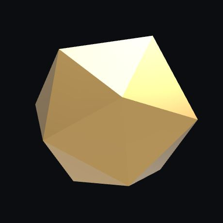

One stone, four rooms
The same cut stone comes with you down the page. In each section it settles into its place beside the words, turned to show something new.
The same cut stone comes with you down the page. In each section it settles into its place beside the words, turned to show something new.

Twenty flat faces, each catching the room's light at its own angle. Here the stone turns a quarter and comes closer.
Small on the page, it still reads as one object: it never fades out and in again, it moves.
It ends where it is largest, and stays.